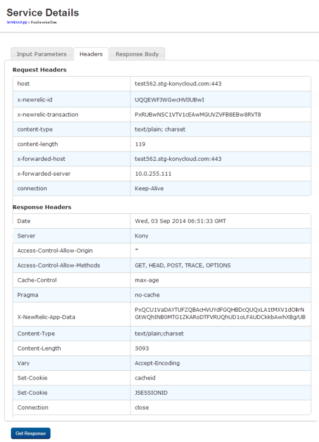
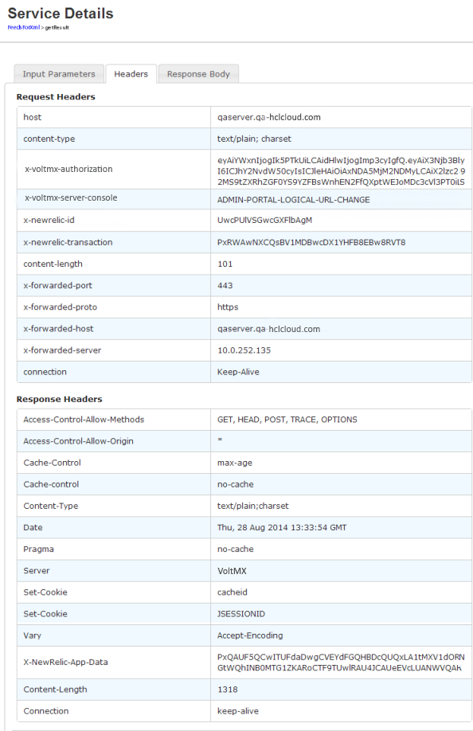
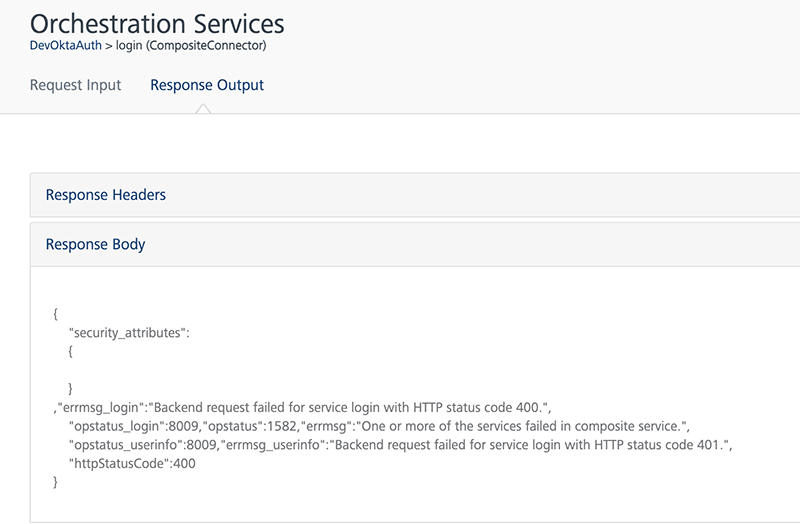
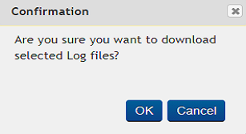

User Guide: Appendix App Servies
Appendix - App Services
App Services console provides you with the following details:
- List of Volt MX Studio applications in your Volt MX cloud environment.
- List of Integration services and Orchestration services defined across your Volt MX Foundry environment.
App Services console consist of the following tabs:
- VoltMX Studio Apps: Displays a list of all the Volt MX Studio Apps.
- Integration Services: Displays a list of Integration services that are added across your Volt MX Foundry apps.
- Orchestration Services: Displays a list of Orchestration services that are added across your Volt MX Foundry apps.
- Logs: These are the system generated reports containing a list of activities that are performed based on the Logger Levels.
- Logger Levels: Allows you to specify the type of logs recoded for Integration Services and Orchestration Services.
- Health Check: The Health check view denotes the connection properties for App Server in a cloud environment
- Reports: Enables you to create Standard Reports, and Custom Reports.
- Downloads: Allows you to download the
middleware-system.jarfor writing preprocessor and postprocessor code.
Volt MX Studio Apps
Click VoltMX Studio Apps from the left pane of the console to view a list of Volt MX Studio applications available in your cloud environment.
For each of these Apps, following details are available:
- App Name: Name of the VoltMXÂ Studio application.
- Services: List of all the services that are added to the app.
- Web App: List the channels (Desktop, Mobile, and Tablet) on which the app is available.
- Status: Specifies if the deployment of the app is successfully.
For each of the apps, you can perform following actions:
Invoking an operation
To invoke an operation, follow these steps:
-
In the Volt MX Studio Apps page, select an operation from the Services list of an application.

The Service Details page is displayed.
-
Enter the input parameters,if required.
-
Click Get Response. The Response Body tab appears.
-
Click Headers to view the headers response.

Launching an App
To launch an application, follow these steps:
-
In the Volt MX Studio Apps page, click the down-arrow next to the channel (Desktop, Mobile, and Tablet).

Following information is available:
- Platforms for which the app is built. For example, iOS and Android.
- URL of the application.
- Click the URL to launch the application.
Deleting an app
To delete an app from the cloud, follow these steps:
-
In the VoltMX Studio Apps page, select an application.

-
Click Delete.

A Confirm Delete window is displayed.
-
Click OK to delete the application.
Integration Services
Click Integration Services from the left pane of the console to view a list of Integration services that are available across the applications within your Volt MX Foundry environment.

For each of the services, following details are available:
- Service name: Name of the Integration service.
- URL: Select an operation from the URL list to display the URL link of the operation. This link is used for invoking the corresponding operation.
Invoking an operation
To invoke an operation, follow these steps:
-
In the Integration page, select an operation from the URL list of an application.
The URL of the operation is displayed.
-
Click the URL to open the Service Details page.

-
Enter the input parameters,if required.
-
Click Get Response. The Response Body tab is displayed.
-
Click Headers to view the headers response.

Orchestration Services
Click Orchestration Services from the left pane of the console to view a list of Orchestration services across the applications within your Volt MX Foundry environment.

For each of the services, following details are available:
- Service name: Name of the Integration service.
- URL: Link to invoke the corresponding operation.
Invoking an operation
To invoke an operation, follow these steps:
-
In the Orchestration page, click the corresponding URL of the operation to open the Service Details page.
-
Enter the input parameters, if required.

-
Click Get Response.The Response Body tab is displayed.

-
Click Headers to view the headers response.
Logs
Logs are automatically generated reports containing a list of activities that are performed based on the Logger Levels.
Logs show a list of instances with Instance ID, IP Address along with the links to view the Archived and Snapshot Logs. If the number of logs is more than ten, you can use the Next or Previous options to view other logs.
There are two types of cloud logs:
Archived Logs
The log files for the server instance that are archived every hour and stored for seven days. You can view and download these archived log files. If the number of archived log files is more than 10, you can use Next or Previous to move to view other archived logs.
On Cloud Logs tab, you can view the list of archived logs and manage them. You can perform the following tasks:
Viewing Archived Logs
To view the archived logs, click View Archived Logs under Archived Logs. The Archived Logs pop-up appears with a list of the archived log files.
Downloading Selected Logs
To download the selected logs, follow these steps:
-
On the Archived Logs page, select the checkbox of desired archived file that you want to download and click Download Selected.
A Confirmation pop-up appears.

-
Click OK to download the selected archived log files.
A pop-up appears to choose the location to save the downloaded archived log files.
-
Select the location to save the downloaded archived log files, and click OK.
Downloading all the Logs
To download all the archived log files, follow these steps:
-
On the Archived Logs page, click Download All.
A Confirmation pop-up appears.

-
Click OK to download the selected archived log files.
A pop-up appears to choose the location to save all downloaded archived log files.
-
Select a location, and click OK.
Refreshing Archived Logs
To refresh the archived logs, on the Archived Logs page, click Refresh.The Archived Logs are refreshed.
Snapshot Logs
You can access real-time logs through the snapshot logs page. Snapshot logs comprise the last manual log snapshot fetched from the server.The logs listed in the table are periodic snapshots of the log files and may not contain the very latest log data. You can view and download these snapshot log files. If the number of snapshot log files is more than ten, you can use Next or Previous options to move to more number of snapshot log files.
On Cloud Logs tab, you can view the list of snapshot logs and manage them.
You can perform the following tasks:
- Viewing Snapshot Logs
- Requesting Latest Snapshot Logs
- Downloading Selected Logs
- Downloading all the Logs
- Refreshing Snapshot Logs
Viewing Snapshot Logs
To view the snapshot logs, click View Snapshot Logs under Snapshot Logs. The Snapshot Logs pop-up appears with all the snapshot log files.
Requesting Latest Snapshot Logs
To request latest snapshot logs, follow these steps:
- On the Snapshot Logs page, to initiate a manual snapshot of all logs on all servers, follow these steps:
-
Click Request Latest Logs.
A Confirmation pop-up appears.
-
Click OK to download the latest log files.
The manual snapshots of the logs are typically available within five minute
Downloading Selected Logs
To download the selected log files, follow these steps:
-
On the Snapshot Logs page, select the checkbox of desired snapshot file that you want to download and click Download Selected.
A Confirmation pop-up appears.
-
Click OK to download the selected snapshot log files.
A pop-up appears to choose the location to save all downloaded archived log files.
-
Select a location, and click OK.
Downloading all the Logs
To download all the snapshot log files, follow these steps:
-
On the Snapshot Logs page, click Download All.
A Confirmation pop-up appears.
-
Click OK to download the selected snapshot log files.
A pop-up appears to choose the location to save all downloaded snapshot log files.
-
Select the location, and click OK.
Refreshing Snapshot Logs
To refresh the snapshot logs and to reload the table with new snapshots available for download, on the Snapshot Logs page, click Refresh.
The Snapshot Logs are refreshed.
Logger Levels
Logger levels enable you to specify the type of logs recoded for Integration Services and Orchestration Services.
Following type of loggers are supported:
- Trace: It designates finer-grained informational events than the DEBUG.
- DEBUG: It designates fine-grained informational events that are most useful to debug an application.
- INFO: It designates informational messages that highlight the progress of the application at coarse-grained level.
- WARN: It designates potentially harmful situations.
- ERROR: It designates error events that might still allow the application to continue running.
- FATAL: It designates very severe error events that will presumably lead the application to abort.
- OFF: It designates that the logging is turned off.
Assigning a logger level
To assign logger levels for the services, follow these steps:
- On the Logger Levels page, select the type of service from the Select Application list.
- Update the levels for all the required loggers.
- Click Save.
Health Check
The Health check view denotes the connection properties for App Server in a cloud environment.

The following are the various connection properties that denote the health of a App Server:
- Cloud Environment Identification: Indicates if the App server is running properly in the cloud environment.
- Access to Reporting Queue: Indicates if the environment has proper reporting Queue URL, and is able to connect.
- Security Credentials: Indicates if the App server has the cloud security credentials.
- Static Resources Location: Indicates if you are able to connect to the Amazon S3 bucket resources.
- Access to Deployment Storage: Indicates if you are able to connect to the Amazon S3 bucket storage repository.
- Access to Device DB: Indicates if you are able to connect to the Device DB.
- Access to Cache: Indicates if you are able to connect to the âAmazon Elastic Cacheâ.
Reports
Enables you to create Standard Reports, and Custom Reports.
To view or generate reports, follow these steps.
-
From the left pane of the console click Reports. A Confirmation pop-up appears.

-
Click Yes. You are directed to the Reports page.

For more information on generation reports refer to:
- Refer to VoltMX Reporting and Analytics - Standard Metrics and Reports.
- Refer to VoltMX Reporting and Analytics - Custom Metrics and Reports
Downloads
Enables you to download the middleware-system.jar file.
Click on the image to download the middleware-system.jar file.
The downloaded file is used to write the custom code for preprocessor, postprocessor and custom Java services.
- Refer to Preprocessor and Postprocessor